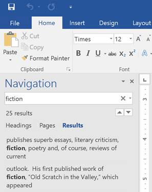

pengantar
Saat Anda bekerja dengan dokumen yang lebih panjang, akan sulit dan memakan waktu lama untuk menemukan kata atau frasa tertentu. Word dapat secara otomatis mencari dokumen Anda menggunakan fitur Temukan, dan memungkinkan Anda mengubah kata atau frasa dengan cepat menggunakan Ganti.
Untuk menemukan teks:
Dalam contoh kami, kami telah menulis makalah akademis dan akan menggunakan perintah Temukan untuk menemukan semua contoh kata tertentu.
Dari tab Beranda, klik perintah Temukan. Anda juga dapat menekan Ctrl+F/kbd> pada keyboard Anda.
The panel navigasi akan muncul di sisi kiri layar.
Ketikkan teks yang ingin Anda temukan di bidang di bagian atas panel navigasi. Dalam contoh kita, kita akan mengetikkan kata yang kita cari.

Jika teks ditemukan dalam dokumen, teks akan disorot dengan warna kuning dan pratinjau hasilnya akan muncul di panel navigasi. Anda juga dapat mengklik salah satu hasil di bawah panah untuk melompat ke sana.

Setelah selesai, klik X untuk menutup panel navigasi. Sorotan akan hilang.

Untuk opsi penelusuran lainnya, klik panah tarik-turun di samping bidang penelusuran.

Untuk mengganti teks:
Anda mungkin menemukan bahwa Anda telah membuat kesalahan berulang kali di seluruh dokumen Anda, seperti salah mengeja nama seseorang, atau bahwa Anda perlu menukar kata atau frasa tertentu dengan yang lain. Anda dapat menggunakan fitur Temukan dan Ganti Word untuk melakukan revisi dengan cepat. Dalam contoh kami, kami akan menggunakan Temukan dan Ganti untuk mengubah judul majalah sehingga disingkat.
Dari tab Beranda, klik perintah Ganti. Anda juga dapat menekan Ctrl+H pada keyboard Anda.

The Cari dan Ganti kotak dialog akan muncul.
Ketik teks yang ingin Anda temukan di Find apa: lapangan.
Ketik teks yang ingin Anda ganti di bidang Ganti dengan :, lalu klik Temukan Berikutnya.

Word akan menemukan teks pertama dan menyorotnya dalam warna abu-abu.
Tinjau teks untuk memastikan Anda ingin menggantinya. Dalam contoh kita, teks adalah bagian dari judul makalah dan tidak perlu diganti. Kami akan mengklik Temukan Berikutnya lagi untuk melompat ke contoh berikutnya.

Jika Anda ingin menggantinya, Anda dapat mengklik Ganti untuk mengubah setiap contoh teks. Anda juga dapat mengklik Ganti Semua untuk mengganti setiap teks di seluruh dokumen.

Teks akan diganti.

Setelah selesai, klik Tutup atau Batal untuk menutup kotak dialog.
Untuk opsi pencarian tambahan, klik Lainnya di kotak dialog Temukan dan Ganti. Dari sini, Anda dapat memilih opsi tambahan, seperti mencocokkan huruf besar-kecil dan mengabaikan tanda baca.

Saat menggunakan Ganti Semua, penting untuk diingat bahwa ia dapat menemukan kecocokan yang tidak Anda antisipasi dan mungkin sebenarnya tidak ingin Anda ubah. Anda hanya boleh menggunakan opsi ini jika Anda benar-benar yakin itu tidak akan menggantikan apa pun yang tidak Anda inginkan.
Tantangan!
Buka dokumen latihan kami.
Dengan menggunakan fitur Temukan, tentukan halaman mana yang menyebutkan Caroline Gordon.
Nama TS Eliot salah eja. Menggantikan semuacontoh Elliot dengan Eliot. Ketika Anda selesai, Anda seharusnya melakukan tiga penggantian.
Nama Allen Tate juga salah eja. Temukan dan Ganti Alan dengan Allen. Petunjuk : Jangan gunakan Ganti Semua. Jika tidak, Anda mungkin tidak sengaja mengganti kata balance.